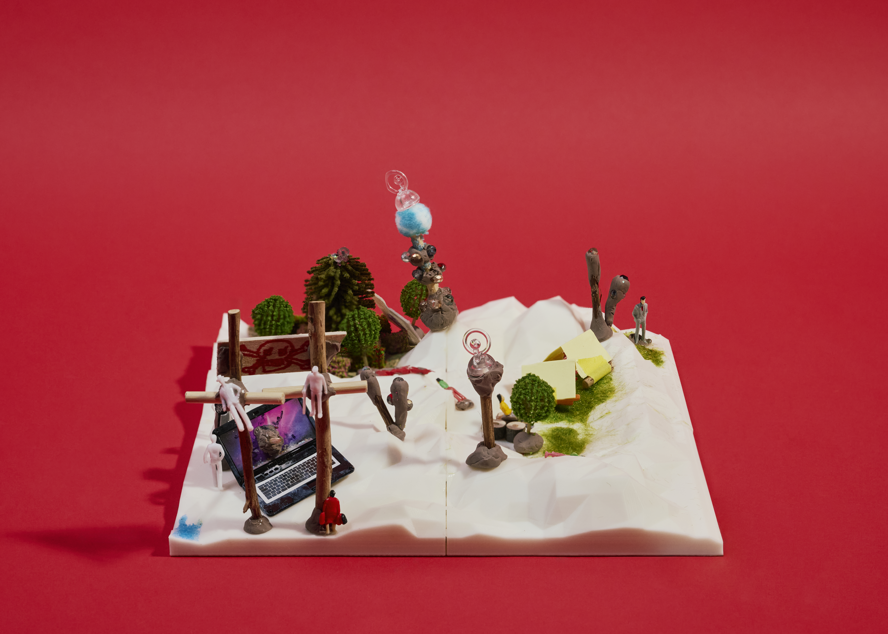
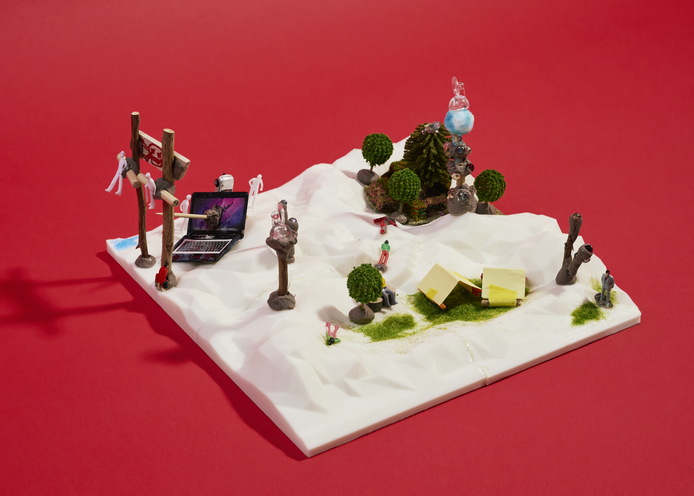

제6구역: 붉은 6구역의 행진
지구인 분석 결과
1. 생물학적 약점
2. 정신적 약점(거짓 정보를 파악하지 못한다.)
3. 정서적 약점
4. 귀여움에 약하다 (e.g. 헤일메리 로키, 만달로리안 그로구)
5. AI 에 대한 과도한 의존
귀여움과 정신감응의 능력으로 인간들의 정신을 공격하자!
* 정신감응 능력은 인간뿐만 아니라 AI에게도 적용될 것으로 예상
● 방안
- 조직을 와해
- 개인의 심리 붕괴
→ AI에 대한 인간의 의존성을 고려해, 이를 화성인의 정서 능력을 통한 바이오 디지털 해킹(지구 해킹을 역으로 진행)
화성인으로서의 입장
지구인의 기술(A.I)을 역으로 무기화해서, 화성인 문화권에는 진입할 수 없는 존재로 여긴다.
전략명: 정신 교란 및 매복
지형 분석을 통해 지구인들에 대한 대응 방안 구상. 지구인들의 착륙 위치를 예상하고 분석하여, 매복하는 방향으로 구성
1. 착륙 예상 위치: 우측 하단, 모래 평야가 있어서 평평해 마을에 접근하기가 유리하며, 운하가 있어서 수자원 접근 용이
2. 대응 방안: 지형을 이용한 매복위치 지정 및 정신 교란 공격을 위한 인프라 시설 구축(중계탑 등)
- 숲을 설치하여 지구인들의 착륙 위치를 유도
- 화성인들은 매복하여 착륙한 지구인들 급습
- 십자가, 부서진 노트북 등의 심볼들을 설치하여, 인간들의 사기를 저하
곡 제목: 붉은 6구역의 행진
깨진 화면 위로 바람이 불고
검은 십자가엔 밤이 내린다
6구역이여, 우리의 요새여
화성의 승리는 영원하리라
가라, 화성의 형제들이여
붉은 별 아래 대열을 세워라
숲은 침묵하고 탑은 노래하리
침입자의 마음은 어둠에 잠기리라
깨진 화면 위로 바람이 불고
검은 십자가엔 밤이 내린다
6구역이여, 우리의 요새여
화성의 승리는 영원하리라